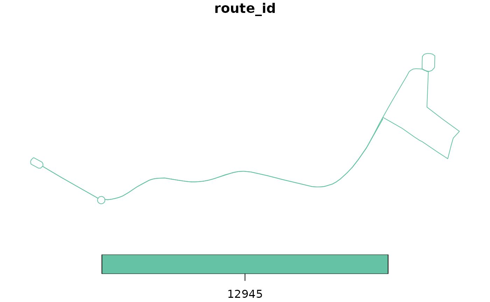

Get all trip shapes for a given route and service
get_route_geometry(gtfs_sf_obj, route_ids = NULL, service_ids = NULL)an sf dataframe for gtfs routes with a row/linestring for each trip
data(gtfs_duke)
gtfs_duke_sf <- gtfs_as_sf(gtfs_duke)
routes_sf <- get_route_geometry(gtfs_duke_sf)
plot(routes_sf[c(1,1350),])
